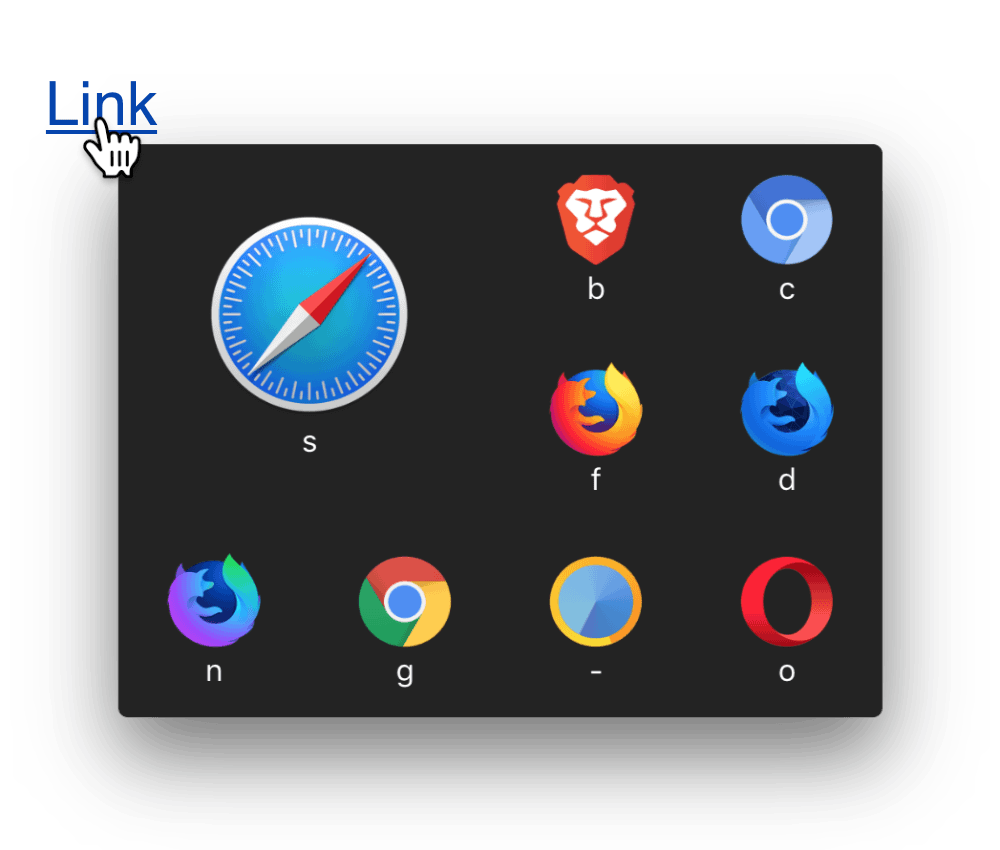

The browser prompter for macOS


Multi-Default
After clicking a link, use the picker to choose the browser to proceed with.

Favourite
Keep your most used browser closest to the mouse and at double the size.

The Blue Bar
Make sure the website you are about to open is the one you were expecting with the blue bar.